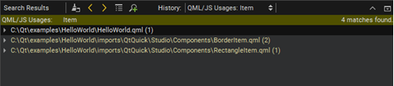
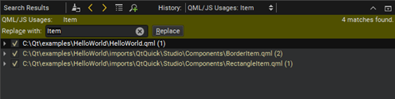

Refactoring
Refactor code to:
- Improve internal quality of your application
- Improve performance and extensibility
- Improve code readability and maintainability
- Simplify code structure
Qt Design Studio allows you to quickly and conveniently apply actions to refactor your code by selecting them in a context menu. For more information, see Applying Refactoring Actions.
By default, the refactored files are saved automatically. To disable this feature, deselect Preferences > Environment > System > Auto-save files after refactoring.
Finding QML Types
To find instances of a specific QML type in a project, place the cursor on the type and select Tools > QML/JS > Find References to Symbol Under Cursor or press Ctrl+Shift+U.
Viewing Search Results
Qt Design Studio searches from the following locations:
- Files listed as a part of the project
- Files directly used by the project files (for example, generated files)
Search Results shows the location and number of search hits in the current project.

You can browse the search results in the following ways:
- To go directly to an instance, double-click the instance in Search Results.
- To move between instances, click the
 (Next Item) button and
(Next Item) button and  (Previous Item) button in Search Results.
(Previous Item) button in Search Results. - To expand and collapse the list of all instances, click the (Expand All) button.
- To filter the search results for the usage of symbols according to access type, such as read, write, or declaration, click the
 (Filter Tree) button and select the access type.
(Filter Tree) button and select the access type. - To clear the search results, click the (Clear) button.
- To start a new search, click the (New Search) button.
Renaming Symbols
You can rename symbols in all files in a project. To rename a QML type in a project, select Tools > QML/JS > Rename Symbol Under Cursor or press Ctrl+Shift+R.
Search Results shows the location and number of instances of the symbol in the current project.

To replace all selected instances, enter the name of the new symbol in the Replace with text box, and select Replace. To omit an instance, deselect the check box next to the instance.
Note: This action replaces all selected instances of the symbol in all files listed in Search Results. You cannot undo this action.